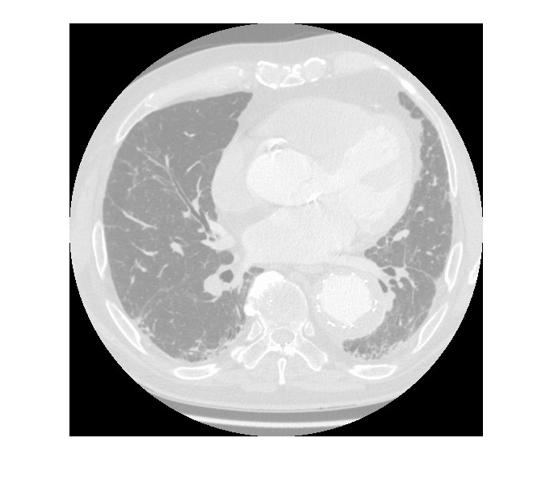
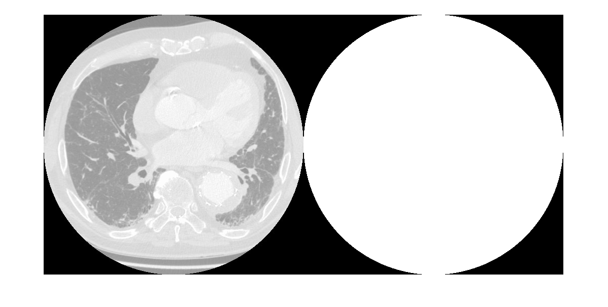
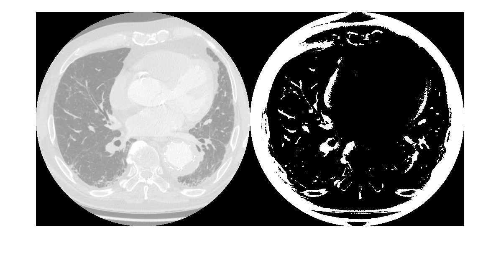
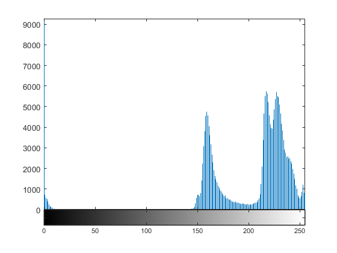
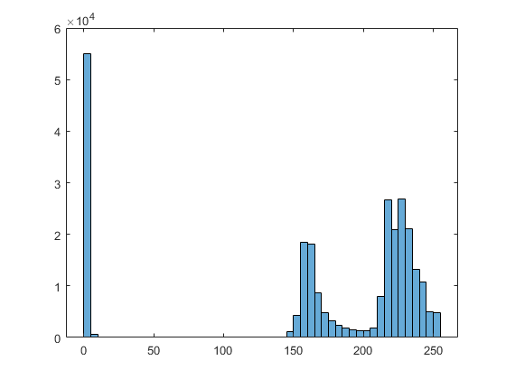
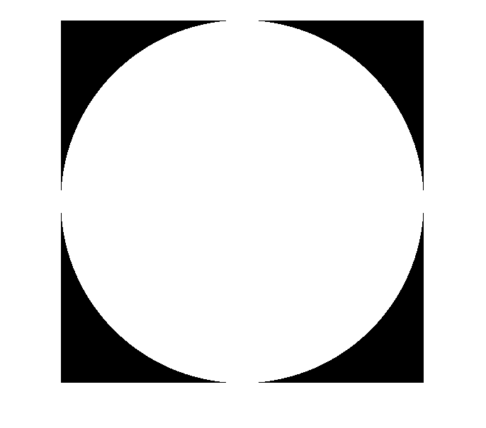
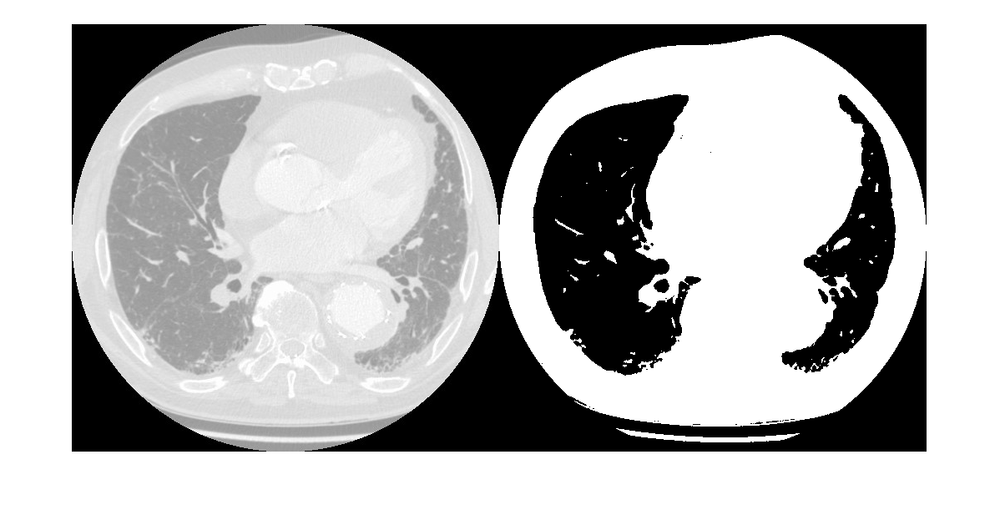
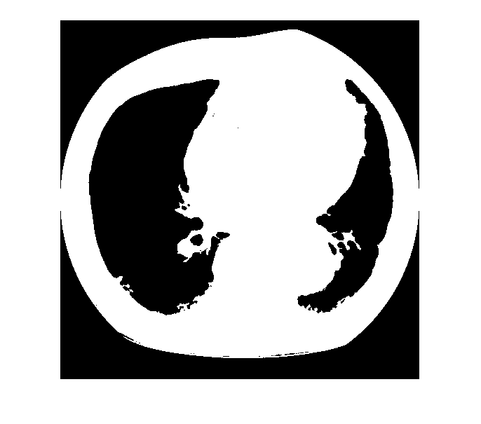
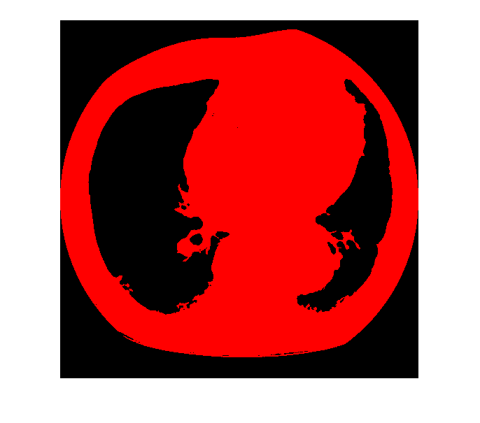

Contents
Start the editor by clearing workspace
close all clear all clc
Get path to Images
cwd_ = pwd;
path_dataset = cwd_+"\dataset_lungs\"
path_dataset =
"C:\Users\santo\OneDrive\Documents\MATLAB\MATLAB\dataset_lungs\"
Read image
lung_img1 = imread(path_dataset+"lung1.jpg");
Convert to Grey scale
lung_img1_grey = rgb2gray(lung_img1); imshow(lung_img1_grey,[])
From OTSU method find the level automatically to binarise
level = graythresh(lung_img1_grey) % Convert the image into a binary image using the threshold. thres_img1_lung_B = imbinarize(lung_img1_grey,level); imshowpair(lung_img1_grey,thres_img1_lung_B,'montage') % Itseems the automated method usig OTSU is not giving good result
level =
0.2941
 adaptive threshold
T = adaptthresh(lung_img1_grey); % Convert image to binary image, specifying the threshold value. thres_img1_lung_B = imbinarize(lung_img1_grey,T); % Display the original image with the binary version, side-by-side. figure imshowpair(lung_img1_grey, thres_img1_lung_B, 'montage') % not giving good result
lets do the Histogram Analysis
figure, imhist(lung_img1_grey); % requires Image Processing Toolbox. % Error in image_analysis_lung (line 21) figure, histogram(lung_img1_grey); 
Set threshold to 200 => 200/256
% from the histogram there are three mimimumns in the histogram. less than % 50 and then at 200 there is a low thres_img1_lung_B = im2bw(lung_img1_grey,50/256); figure, imshow(thres_img1_lung_B, []); % The OTSU method may taken 50 as threshold thres_img1_lung_B = im2bw(lung_img1_grey,203/256); figure, imshow(thres_img1_lung_B, []); figure, imshowpair(lung_img1_grey,thres_img1_lung_B,'montage'); 
Connected component analysis for region of interest selection
conn = 8; labeledImage = bwlabel(thres_img1_lung_B,conn); blobMeasurements = regionprops(labeledImage, lung_img1_grey, 'all'); numberOfBlobs = size(blobMeasurements, 1); allBlobAreas = [blobMeasurements.Area]; [values_ar,inx_ar] = sort(allBlobAreas,'desc');
allBlobsImage = ismember(labeledImage, inx_ar(1)); imshow(allBlobsImage)
assign each blob a different color
coloredLabels = label2rgb (allBlobsImage, 'hsv', 'k', 'shuffle'); % pseudo random color labels imshow(coloredLabels);
Area = sum(allBlobsImage(:))*0.75*0.75
Area = 7.7406e+04